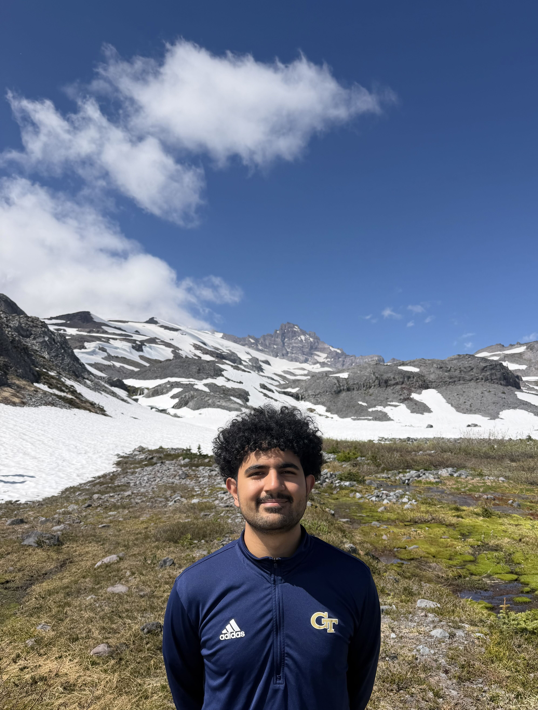
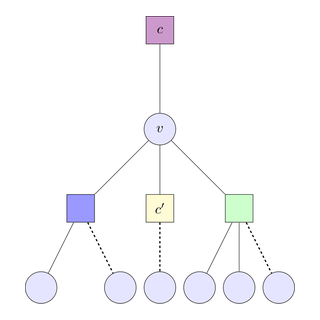

I am a student at Georgia Tech studying electrical engineering and mathematics. I am interested in information theory, machine learning, and signal processing. Currently, I am working with Amirali Aghazadeh and Viveck Cadambe. I am applying to Ph.D. programs for Fall 2027.

|
ICML 2026
@misc{tsui2026proteincircuittracingcrosslayer,
title={Protein Circuit Tracing via Cross-layer Transcoders},
author={Darin Tsui and Kunal Talreja and Daniel Saeedi and Amirali Aghazadeh},
year={2026},
eprint={2602.12026},
archivePrefix={arXiv},
primaryClass={cs.LG},
url={https://arxiv.org/abs/2602.12026},
}
|
|
|
NeurIPS 2025 AI4Science Workshop
@misc{tsui2025sparseautoencoderslownprotein,
title={Sparse Autoencoders for Low-$N$ Protein Function Prediction and Design},
author={Darin Tsui and Kunal Talreja and Amirali Aghazadeh},
year={2025},
eprint={2508.18567},
archivePrefix={arXiv},
primaryClass={cs.LG},
url={https://arxiv.org/abs/2508.18567},
}
|
|
|
 |
IEEE Information Theory Workshop (ITW) 2025
@misc{tsui2025efficientalgorithmsparsefourier,
title={Efficient Algorithm for Sparse Fourier Transform of Generalized $q$-ary Functions},
author={Darin Tsui and Kunal Talreja and Amirali Aghazadeh},
year={2025},
eprint={2501.12365},
archivePrefix={arXiv},
primaryClass={cs.CC},
url={https://arxiv.org/abs/2501.12365},
}
|